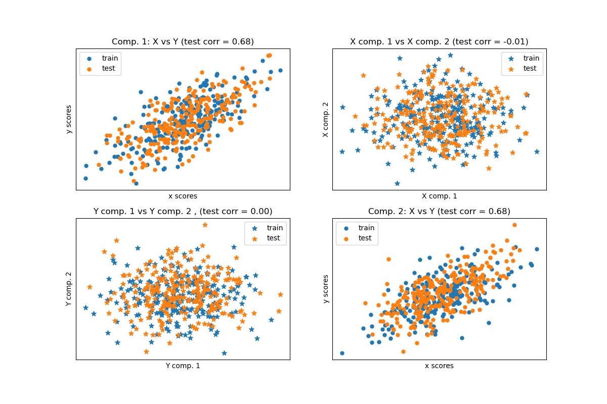

Nota
Haz clic en aquí para descargar el código de ejemplo completo o para ejecutar este ejemplo en tu navegador a través de Binder
Comparar métodos de descomposición cruzada¶
Uso sencillo de varios algoritmos de descomposición cruzada: - PLSCanonical - PLSRegresión, con respuesta multivariada, también conocida como PLS2 - PLSRegresión, con respuesta univariada, también conocida como PLS1 - CCA
Dados dos conjuntos de datos bidimensionales multivariantes, X e Y, PLS extrae las “direcciones de covarianza”, es decir, los componentes de cada conjunto de datos que explican la varianza más compartida entre ambos conjuntos de datos. Esto es evidente en la visualización de la matriz de dispersión: los componentes 1 en el conjunto de datos X y el conjunto de datos Y tienen una correlación máxima (los puntos se encuentran alrededor de la primera diagonal). Esto también es cierto para los componentes 2 en ambos conjuntos de datos, sin embargo, la correlación entre los conjuntos de datos para los diferentes componentes es débil: la nube de puntos es muy esférica.
Out:
Corr(X)
[[ 1. 0.52 -0.06 -0.03]
[ 0.52 1. -0.02 -0.06]
[-0.06 -0.02 1. 0.58]
[-0.03 -0.06 0.58 1. ]]
Corr(Y)
[[ 1. 0.56 -0.02 -0. ]
[ 0.56 1. -0.05 0.04]
[-0.02 -0.05 1. 0.53]
[-0. 0.04 0.53 1. ]]
True B (such that: Y = XB + Err)
[[1 1 1]
[2 2 2]
[0 0 0]
[0 0 0]
[0 0 0]
[0 0 0]
[0 0 0]
[0 0 0]
[0 0 0]
[0 0 0]]
Estimated B
[[ 1. 1. 0.9]
[ 2. 2. 2. ]
[ 0. -0. 0. ]
[ 0. 0. 0. ]
[-0. -0. -0. ]
[ 0.1 -0. 0. ]
[-0. -0.1 0. ]
[ 0. 0. 0. ]
[-0. 0. -0. ]
[-0. -0. -0. ]]
Estimated betas
[[ 1. ]
[ 1.9]
[-0. ]
[-0. ]
[-0. ]
[-0. ]
[ 0. ]
[-0.1]
[ 0. ]
[ 0.1]]
print(__doc__)
import numpy as np
import matplotlib.pyplot as plt
from sklearn.cross_decomposition import PLSCanonical, PLSRegression, CCA
# #############################################################################
# Dataset based latent variables model
n = 500
# 2 latents vars:
l1 = np.random.normal(size=n)
l2 = np.random.normal(size=n)
latents = np.array([l1, l1, l2, l2]).T
X = latents + np.random.normal(size=4 * n).reshape((n, 4))
Y = latents + np.random.normal(size=4 * n).reshape((n, 4))
X_train = X[:n // 2]
Y_train = Y[:n // 2]
X_test = X[n // 2:]
Y_test = Y[n // 2:]
print("Corr(X)")
print(np.round(np.corrcoef(X.T), 2))
print("Corr(Y)")
print(np.round(np.corrcoef(Y.T), 2))
# #############################################################################
# Canonical (symmetric) PLS
# Transform data
# ~~~~~~~~~~~~~~
plsca = PLSCanonical(n_components=2)
plsca.fit(X_train, Y_train)
X_train_r, Y_train_r = plsca.transform(X_train, Y_train)
X_test_r, Y_test_r = plsca.transform(X_test, Y_test)
# Scatter plot of scores
# ~~~~~~~~~~~~~~~~~~~~~~
# 1) On diagonal plot X vs Y scores on each components
plt.figure(figsize=(12, 8))
plt.subplot(221)
plt.scatter(X_train_r[:, 0], Y_train_r[:, 0], label="train",
marker="o", s=25)
plt.scatter(X_test_r[:, 0], Y_test_r[:, 0], label="test",
marker="o", s=25)
plt.xlabel("x scores")
plt.ylabel("y scores")
plt.title('Comp. 1: X vs Y (test corr = %.2f)' %
np.corrcoef(X_test_r[:, 0], Y_test_r[:, 0])[0, 1])
plt.xticks(())
plt.yticks(())
plt.legend(loc="best")
plt.subplot(224)
plt.scatter(X_train_r[:, 1], Y_train_r[:, 1], label="train",
marker="o", s=25)
plt.scatter(X_test_r[:, 1], Y_test_r[:, 1], label="test",
marker="o", s=25)
plt.xlabel("x scores")
plt.ylabel("y scores")
plt.title('Comp. 2: X vs Y (test corr = %.2f)' %
np.corrcoef(X_test_r[:, 1], Y_test_r[:, 1])[0, 1])
plt.xticks(())
plt.yticks(())
plt.legend(loc="best")
# 2) Off diagonal plot components 1 vs 2 for X and Y
plt.subplot(222)
plt.scatter(X_train_r[:, 0], X_train_r[:, 1], label="train",
marker="*", s=50)
plt.scatter(X_test_r[:, 0], X_test_r[:, 1], label="test",
marker="*", s=50)
plt.xlabel("X comp. 1")
plt.ylabel("X comp. 2")
plt.title('X comp. 1 vs X comp. 2 (test corr = %.2f)'
% np.corrcoef(X_test_r[:, 0], X_test_r[:, 1])[0, 1])
plt.legend(loc="best")
plt.xticks(())
plt.yticks(())
plt.subplot(223)
plt.scatter(Y_train_r[:, 0], Y_train_r[:, 1], label="train",
marker="*", s=50)
plt.scatter(Y_test_r[:, 0], Y_test_r[:, 1], label="test",
marker="*", s=50)
plt.xlabel("Y comp. 1")
plt.ylabel("Y comp. 2")
plt.title('Y comp. 1 vs Y comp. 2 , (test corr = %.2f)'
% np.corrcoef(Y_test_r[:, 0], Y_test_r[:, 1])[0, 1])
plt.legend(loc="best")
plt.xticks(())
plt.yticks(())
plt.show()
# #############################################################################
# PLS regression, with multivariate response, a.k.a. PLS2
n = 1000
q = 3
p = 10
X = np.random.normal(size=n * p).reshape((n, p))
B = np.array([[1, 2] + [0] * (p - 2)] * q).T
# each Yj = 1*X1 + 2*X2 + noize
Y = np.dot(X, B) + np.random.normal(size=n * q).reshape((n, q)) + 5
pls2 = PLSRegression(n_components=3)
pls2.fit(X, Y)
print("True B (such that: Y = XB + Err)")
print(B)
# compare pls2.coef_ with B
print("Estimated B")
print(np.round(pls2.coef_, 1))
pls2.predict(X)
# PLS regression, with univariate response, a.k.a. PLS1
n = 1000
p = 10
X = np.random.normal(size=n * p).reshape((n, p))
y = X[:, 0] + 2 * X[:, 1] + np.random.normal(size=n * 1) + 5
pls1 = PLSRegression(n_components=3)
pls1.fit(X, y)
# note that the number of components exceeds 1 (the dimension of y)
print("Estimated betas")
print(np.round(pls1.coef_, 1))
# #############################################################################
# CCA (PLS mode B with symmetric deflation)
cca = CCA(n_components=2)
cca.fit(X_train, Y_train)
X_train_r, Y_train_r = cca.transform(X_train, Y_train)
X_test_r, Y_test_r = cca.transform(X_test, Y_test)
Tiempo total de ejecución del script: (0 minutos 0.534 segundos)